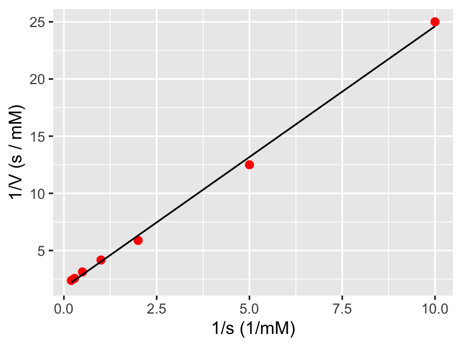

2.4 Can you linearize your model?
We can also plot nonlinear models, or models that can be made linear. While the equation \(y=ae^{bx}\) non linear with respect to the parameters, it can be made linear by a logarithmic transformation of the data: \[\begin{equation} \ln(y) = \ln(ae^{bx}) = \ln(a) + \ln (e^{bx}) = \ln(a) + bx \end{equation}\]
The advantage to this approach is that the growth rate parameter is easily identifiable from the data, and the value of \(a\) is found by exponentiation of the fitted intercept value. The disadvantage is that you need to interpret the do a log transform of the \(y\) variable first before doing any fits.
Example 2.2 A common equation in enzyme kinetics is the Michaelis-Menten law, which states that the rate of the uptake of a substrate \(V\) is given by the equation:
\[\begin{equation} V = \frac{V_{max} s}{s+K_{m}}, \end{equation}\]
where \(s\) is the amount of substrate, \(K_{m}\) is half-saturation constant, and \(V_{max}\) the maximum reaction rate. (Typically \(V\) is used to signify the “velocity” of the reaction.)
Say you have the following data:
| s (mM) | V (mM / s) |
|---|---|
| 0.1 | 0.04 |
| 0.2 | 0.08 |
| 0.5 | 0.17 |
| 1.0 | 0.24 |
| 2.0 | 0.32 |
| 3.5 | 0.39 |
| 5.0 | 0.42 |
R.
tibble) of these data:
enzyme_data <- tibble(
s = c(0.1,0.2,0.5,1.0,2.0,3.5,5.0),
V = c(0.04,0.08,0.17,0.24,0.32,0.39,0.42) )Next let’s do some exploratory data analysis:
ggplot(data = enzyme_data) +
geom_point(aes(x=s,y=V),
color='red',
size=2) +
labs(x = 's (mM)',
y= 'V (mM / s)')
Definitely looks non-linear. But take a look at what happens if we plot the reciprocal of \(s\) and the reciprocal of \(V\):
ggplot(data = enzyme_data) +
geom_point(aes(x=1/s,y=1/V),
color='red',
size=2) +
labs(x = '1/s (1/mM)',
y= '1/V (s / mM)') That looks really linear! Notice how easy it was to do that data transformation in our plot command. In order to do a linear fit to the transformed data we will use the regression formulas defined above and the handy structure
That looks really linear! Notice how easy it was to do that data transformation in our plot command. In order to do a linear fit to the transformed data we will use the regression formulas defined above and the handy structure I(VARIABLE):
enzyme_fit <- lm(I(1/V) ~ 1+ I(1/s),
data = enzyme_data)
summary(enzyme_fit)##
## Call:
## lm(formula = I(1/V) ~ 1 + I(1/s), data = enzyme_data)
##
## Residuals:
## 1 2 3 4 5 6 7
## 0.3913 -0.6764 -0.4347 0.1360 0.2376 0.1667 0.1795
##
## Coefficients:
## Estimate Std. Error t value Pr(>|t|)
## (Intercept) 1.74417 0.21009 8.302 0.000414 ***
## I(1/s) 2.28645 0.04868 46.968 8.26e-08 ***
## ---
## Signif. codes: 0 '***' 0.001 '**' 0.01 '*' 0.05 '.' 0.1 ' ' 1
##
## Residual standard error: 0.4323 on 5 degrees of freedom
## Multiple R-squared: 0.9977, Adjusted R-squared: 0.9973
## F-statistic: 2206 on 1 and 5 DF, p-value: 8.263e-08enzyme_data_model <- broom::augment(enzyme_fit,data=enzyme_data)
ggplot(data = enzyme_data) +
geom_point(aes(x=1/s,y=1/V),
color='red',
size=2) +
geom_line(data = enzyme_data_model,
aes(x=1/s,y=.fitted)) +
labs(x = '1/s (1/mM)',
y= '1/V (s / mM)')Notice when plotting the fitted model we didn’t need to take the reciprocal of .fitted because the linear model already did the inverse. However if we wanted to plot the model with the original data, then we need to take the reciprocal (confusing - I know!)
ggplot(data = enzyme_data) +
geom_point(aes(x=s,y=V),
color='red',
size=2) +
geom_line(data = enzyme_data_model,
aes(x=s,y=1/.fitted)) +
labs(x = 's (mM)',
y= 'V (mM / s)')